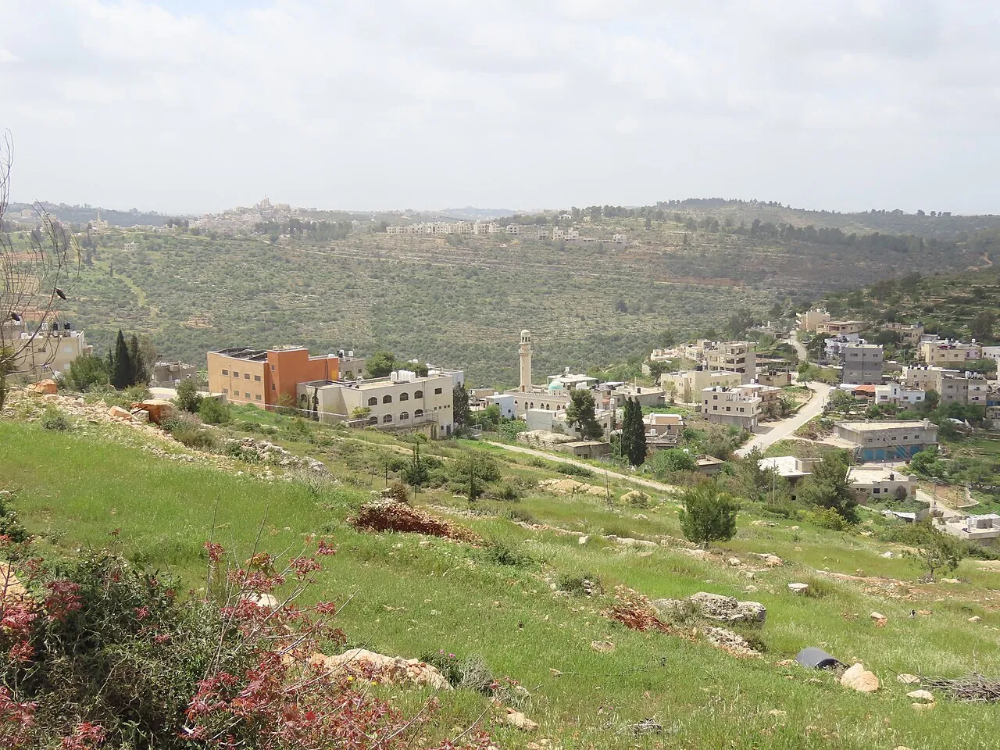

Northern West Bank — Hours later, Defense Minister Israel Katz called Israel’s presence in the emptied Jenin, Tulkarm and Nur Shams camps ‘permanent’ and said the court should not intervene.
Rafah, Gaza Strip — The Israeli military said it had targeted militants; a man wounded in northern Gaza a day earlier also died, medical sources told WAFA.
Two Palestinians were killed and several others wounded on Monday morning when an Israeli drone struck a group of people in the al-Mawasi area of Rafah, in the southern Gaza Strip, sources at Nasser Medical Complex told WAFA.
The Israeli military said it had targeted ‘terror operatives’ and that the results of the strike were under review, The Times of Israel reported, adding that Palestinian media described the strike as hitting near a mosque in the Rafah area and wounding three people.
Turmus Ayya, north of Ramallah — Israeli forces ordered farmers out of the al-Shuna area in the morning, and a young man was later hurt by settlers while harvesting, local sources said.
Israeli forces stopped farmers from entering their land in the al-Shuna area of Turmus Ayya, north of Ramallah, on Monday morning and forced those already there to leave before they could pick their olives, local sources told WAFA.
Later in the morning a young man was wounded and bruised when settlers attacked him while he was harvesting olives in the town, and he was taken to hospital, local sources said.
Local officials in the Nablus and Hebron areas said settlers from nearby outposts keep cutting the lines to Palestinian homes. WAFA / Birin village council
Dozens of Israelis, described by WAFA as settlers, entered the Al-Aqsa Mosque compound through the Mughrabi Gate on Monday morning under the protection of Israeli forces and performed Talmudic prayers and rituals in front of the Dome of the Rock, local sources told WAFA.
Tenders for 1,234 housing units will not be reviewed before 19 November, after the attorney general ordered a delay. The Times of Israel / Israel Land Authority
Occupied West Bank and East Jerusalem — Arrests were reported in Tulkarm, Jenin, Hebron, Bethlehem, Nablus and al-Eizariya, and a man was wounded in Qabatiya.
Israeli forces detained 27 Palestinians, among them former prisoners, in raids across the occupied West Bank and East Jerusalem before dawn on Monday, Quds News Network reported: nine in Tulkarm governorate, six in Jenin, five in Hebron, four in Bethlehem, two in Nablus and one in al-Eizariya. A man was moderately wounded during a house raid in Qabatiya, south of Jenin, the network said.
Ya’bad municipality said the gates endanger lives by delaying ambulances; in Jenin, bulldozers began a road on land seized under a new military order. WAFA / Ya'bad municipality; Colonization and Wall Resistance Commission
Northern West Bank — The court accepted the state’s view that conditions are not yet ripe, but told it to say by 23 November whether returns can be sped up.
Israel’s High Court of Justice ordered the Defense Ministry and the military on Monday to provide a timetable for the return of Palestinians displaced from refugee camps in the northern occupied West Bank, while accepting that security conditions were not yet ripe for them to go back, The Times of Israel reported.
Responding to a petition by the Association for Civil Rights in Israel, the court told the state to say by 23 November whether it can speed up the return of more than 33,000 Palestinians displaced from the Jenin, Tulkarm and Nur Shams camps, Haaretz reported.
Finance Minister Bezalel Smotrich criticised the ruling, according to The Times of Israel, which said the camps’ residents were displaced by an Israeli military operation in 2025.
Abdallah Kamil wrote that the minister’s remarks near Tulkarm used the 7 October anniversary to spread fear rather than prevent another attack. Haaretz (opinion by the Governor of Tulkarm)
Gaza Strip — Four soldiers told the paper that strikes went ahead despite estimates of hundreds of civilian casualties; the military disputes their account.
Four Israeli soldiers who served in military intelligence and drone units told Haaretz that rules for strikes in Gaza were loosened during the war, with attacks approved despite estimates that hundreds of civilians could be harmed, and with orders not to question their missions. The Israeli military disputes their account of how strikes were approved, Haaretz said.
According to WAFA’s summary of the report, one soldier said that before a strike on a residential block in Jabalia camp on 31 October 2023, intelligence estimated that 250 to 300 people could be harmed, which sent the decision to the chief of staff; afterwards, he said, it became clear that about 250 Palestinian civilians had been killed.
Gaza Strip — Hospitals received five bodies and 18 injured in 24 hours; 1,493 people have been killed since the ceasefire, the sources said.
The number of Palestinians killed in Gaza since 7 October 2023 has risen to 74,382, with 175,416 injured, medical sources told WAFA on Monday.
Hospitals received five dead and 18 injured in the previous 24 hours, four of them newly killed and two bodies recovered, the sources said. Since the ceasefire of 11 October 2025, 1,493 people have been killed and 5,299 injured, and 836 bodies have been recovered, they said, adding that some victims remain under rubble or in the streets where rescue crews cannot reach them.
al-Lubban al-Sharqiya, south of Nablus — Owners lost this season’s crop; the village’s main entrance was also closed, WAFA’s correspondent said.
Israeli bulldozers uprooted more than 200 old, fruit-bearing olive trees in the al-Sur area east of al-Lubban al-Sharqiya, south of Nablus, on Monday before their owners could harvest them, WAFA’s correspondent reported.
Israeli forces also closed the village’s main entrance, forcing residents onto detours, and have kept villagers from their trees in Wadi Abwein, southwest of the village, and Wadi al-Sha’ir, to the north, since the start of the season, WAFA said.
Occupied West Bank — Settlers carried out 177 of the attacks and killed three Palestinians since the start of the month, the Colonization and Wall Resistance Commission said.
The Colonization and Wall Resistance Commission recorded 219 attacks by settlers and the Israeli army between 1 and 12 October in a preliminary count based on field reports, 136 of them linked to the olive harvest, it said on Monday. Settlers carried out 177 of the attacks and settlers and soldiers acted together in 42, it said, and settlers have killed three Palestinians since the start of the month.
Of the harvest-related incidents, 92 were direct attacks on pickers or denial of access to land (59 by settlers, 19 joint and 14 by the army alone), and 45 involved theft of the crop or damage to trees, the Commission said.
Pupils who must travel daily to a school in al-Fakheit were forced back to it, a local activist said; nearby, soldiers escorted another family’s children to school. WAFA (local activist); The Times of Israel
Israeli prisons — The Prisoners’ Society says 87 Palestinian women are now in Israeli prisons, 21 of them under administrative detention.
Israeli authorities renewed for four more months the administrative detention, without charge or trial, of a 33-year-old Palestinian journalist who has been held in isolation for 50 days in a prison in Beersheba, the Palestinian Prisoners’ Society said on Monday, according to Quds News Network. The society said she had been beaten and repeatedly moved between prisons, which it said obstructs lawyers’ visits.
The number of women held under administrative detention rose to 21 after a four-month order was issued against a teacher and community activist from al-Bireh, bringing the total number of Palestinian women in Israeli prisons to 87, the society said.
Ramallah — He asked the world to press Israel to lift more than 1,000 checkpoints; the EU’s foreign policy chief said the postponed vote should happen as soon as possible.
Palestinian Vice President Hussein al-Sheikh said on Monday that the leadership remains committed to holding presidential and legislative elections together and would bring the date forward as soon as conditions allow a fair and transparent vote, WAFA reported. The elections were postponed by presidential decree on 10 October to September 2027.
Al-Sheikh called on the international community to press Israel to allow voting in East Jerusalem, the West Bank and Gaza by halting raids and settler attacks, removing ‘more than a thousand checkpoints’ and releasing withheld Palestinian funds, according to WAFA.
Gaza Strip — Women and children were 37 percent of the verified deaths; the office says Israeli forces’ conduct near the ‘yellow line’ raises fears it is treated as a kill zone.
The UN Human Rights Office in the occupied Palestinian territory said it had verified 1,076 conflict-related deaths in Gaza between the ceasefire announcement in October 2025 and the end of July 2026: 268 children, 126 women and 682 men. More than 1,400 Palestinians have been killed since the ceasefire, according to the Palestinian Ministry of Health, the office said.
It verified 331 killings near the so-called yellow line marking Israeli military deployment, and said there is no single identifiable line but ever-shifting boundaries, raising serious concerns that the area is being treated as a kill zone. Israeli forces controlled nearly 53 percent of Gaza when the ceasefire was announced and aim to reach 70 percent, the office said.
Blasts and gunfire have damaged tents and forced dozens of families to move again in eastern Gaza City and Khan Younis, it said. Quds News Network / Gaza Civil Defence
Ibrahimi Mosque, Old City of Hebron — The two were moved to Ofer prison and face a hearing this week; the Palestinian Awqaf ministry has not commented, the network said.
Israeli forces last Thursday detained the director of the Ibrahimi Mosque in Hebron and the head of its custodians after they refused to hand over the keys to historic shrines inside the building, Quds News Network reported on Monday, citing its own information and the director’s father, an imam at the mosque.
The two were detained during an inspection tour of the mosque that Israeli authorities had requested, taken to the Etzion interrogation centre and moved on Sunday to Ofer prison, with a hearing set for next Thursday, the network said. It said the mosque’s staff have been barred for about four months from several shrines and rooms in the section under Israeli control, and that the call to prayer has not been made from its historic room for 113 days.
Tubas governorate — Four families have already left after armed settlers threatened them, and the last road in was cut by a trench, Quds News Network reports.
In Khirbet al-Ras al-Ahmar, a herding community east of Tammun in the northern Jordan Valley, 47 Palestinian families have lived under a tight siege for about a month, Quds News Network reported. Four families have already left after armed settlers raided their homes and threatened to kill them, the network said.
Residents go out at dawn for supplies and fetch water at night to avoid being chased, and a trench was dug in mid-September across the last remaining way in, the report said. The head of the local village council said in September that Israeli forces had demolished six wells in a month and confiscated pumps, cutting the water lines each time residents relaid them.
The education ministry warns that dozens of West Bank schools face demolition or stop-work orders. Quds News Network / Palestinian Ministry of Education
Umm Safa, north of Ramallah — Settlers have cut the village off from its only cemetery since August, and six outposts now ring it, its council head told Mondoweiss.

Umm Safa, north of Ramallah, on 5 April 2026, with the village mosque at the centre and Jibiya on the far ridge. Archive photo. Photo: יעקב via Wikimedia Commons, CC0.
The roughly 750 people of Umm Safa, north of Ramallah, have been unable to reach their village’s only cemetery since August 2026, when settlers seized the last farmland around it and set up a new outpost there, Mondoweiss reported in a feature by Palestinian journalist Shatha Hammad.
‘If someone in the village dies, there is nowhere to bury them,’ village council head Marwan Sabbah told the outlet. He said six outposts have been set up on the village’s land since October 2023, one of them about 50 metres from homes, and that the village now holds about 100 of its roughly 4,800 dunams. The army has sealed the village’s main entrance with a gate for three years, turning a 20-minute trip to Ramallah into more than an hour, the report said.
A 70-year-old mother who lives about 50 metres from an outpost told Mondoweiss that settlers took four of her sheep about a month ago and that soldiers stopped villagers from getting them back. ‘It’s impossible for us to leave Umm Safa,’ she said.
West Bank and Gaza — The agency’s closing tally lists arrests, new gates, demolitions and settler attacks across the West Bank.
WAFA’s end-of-day round-up said three Palestinians were killed in Gaza on Monday: two in the drone strike in Rafah’s al-Mawasi area and a man who died of wounds from a strike in the north the day before.
In the evening Israeli forces entered Qalqilya from its southern entrance, firing stun grenades and bullets, and shot and wounded a boy before detaining him, local sources told WAFA. Troops also detained a man at his farm in Kafr Malik and a man in Silwad, briefly held a Silwad municipality ambulance volunteer, and fired tear gas in Deir Dibwan, setting off a fire near the town’s main mosque.
A left-wing group says its volunteers pushed away a settler who tried to attack two Palestinian women; a right-wing site says the activists beat a settler. The Times of Israel
The running order in your inbox as the sky over Palestine starts to lighten. Tomorrow that is 06:18 Palestine time, and a little later each day until spring. See a sample.